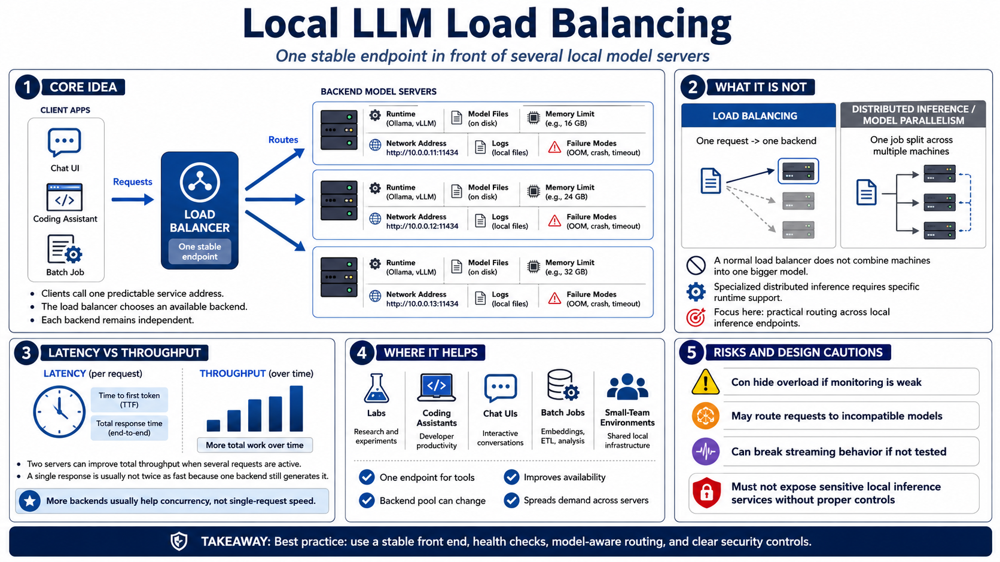

What Local LLM Load Balancing Means
Connecting to LMS... Progress: in progress

Narration
Local LLM load balancing means placing one stable endpoint in front of several independently running model-serving servers. Each backend still has its own runtime, model files, memory limits, network address, logs, and failure modes. The load balancer does not make those systems disappear. It decides which available backend should receive an incoming request, while clients continue to call one predictable service address.
That is different from distributed inference, model parallelism, or a true cluster designed to split one inference job across multiple machines. A normal load balancer sends one request to one backend. Specialized distributed inference can divide work across compute resources, but it requires specific runtime support. In this course, the focus is practical routing across local inference endpoints, not combining machines into one larger model.
The most important expectation is latency versus throughput. Latency is the delay for one request, such as time to first token and total response time. Throughput is how much work the service completes over time. Two servers can increase total throughput when several requests are active, but they usually do not make a single response twice as fast because one backend is still generating that response.
Load balancing is useful for labs, coding assistants, chat UIs, batch jobs, and small team environments because it gives tools one endpoint while the backend pool can change. Used well, it improves availability and spreads demand. Used poorly, it can hide overload, route requests to incompatible models, break streaming behavior, or expose a sensitive local inference service without proper controls.